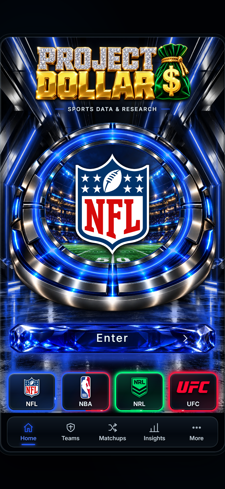

Home — actual hosted screenshots
Untouched screenshots from the deployed website in genuine WebKit, with a 2× display scale. Choose a sport and viewport below. The phone screenshots were captured at 393 × 852 and 430 × 896.

NFL · 393 × 852. Click the screenshot to open the full original PNG.